Pressure Test
Pressure TestSpecial Tools Required
^ A/T clutch pressure gauge set 07406-0020400 or 07406-0020401
^ A/T pressure hose, 2,210 mm 07MAJ-PY4011A
^ A/T pressure hose adapter 07MAJ-PY40120
1. Make sure the transmission fluid is filled to the proper level.
2. Raise the vehicle, and make sure it is securely supported.
3. Allow all four wheels to rotate freely.
4. Remove the transmission undercover (A) and splash shield (B).
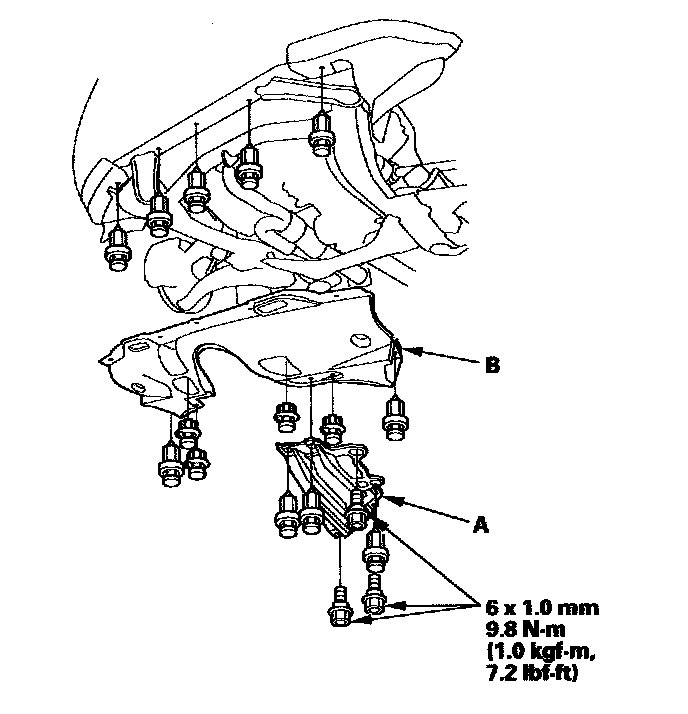
5. Remove the damper from the front subframe.
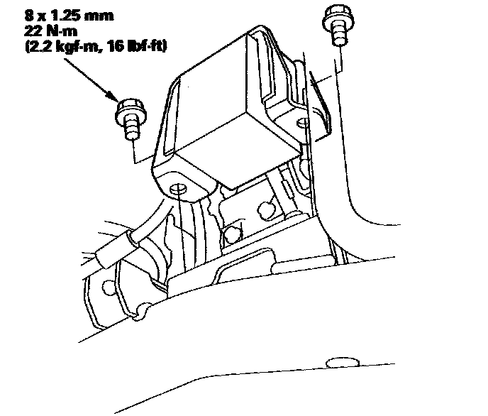
6. Connect the HDS to the DLC (A), and go to the A/T data list. If the HDS does not communicate with the PCM, troubleshoot the DLC circuit.
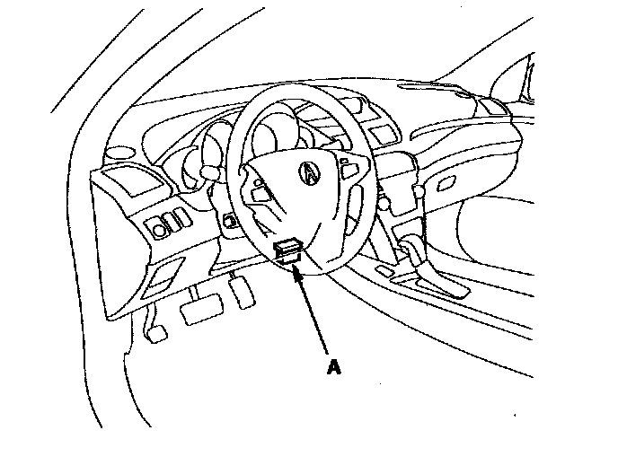
7. Connect the oil pressure gauge to the line pressure inspection hole (A). Do not allow dust or other foreign particles to enter the hole while connecting the gauge.
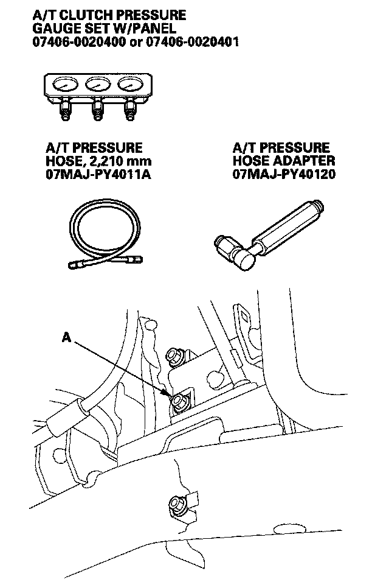
8. Start the engine, and warm it up to normal operating temperature (the radiator fan comes on).
9. Measure the line pressure at the line pressure inspection port (A) in the P or N position while holding the engine speed at 2,000 rpm.
NOTE: Higher pressure may be indicated if measurements are made in the shift lever position other than P or N.
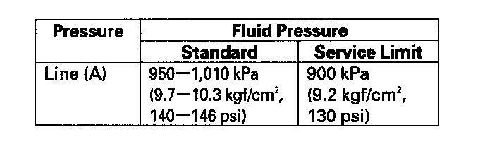
10. Turn the engine off, then disconnect the oil pressure gauge from the line pressure inspection port.
11. Install the sealing bolt to the line pressure inspection port with a new sealing washer, and tighten the bolt to 18 N-m (1.8 kgf-m, 13 lbf-ft). Do not reuse the old sealing washer.
12. Connect the oil pressure gauge to the 1st clutch pressure inspection port (B) and the 1st-hold clutch pressure inspection port (C).
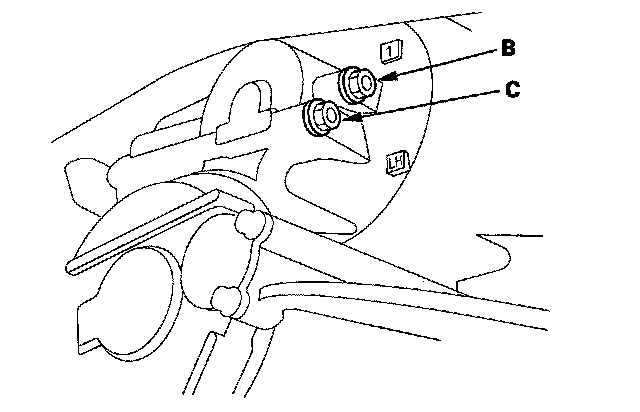
13. Remove the air cleaner housing and intake air duct, and connect the oil pressure gauge to the 2nd clutch pressure inspection port (D). Then temporarily install the air cleaner housing and intake air duct.
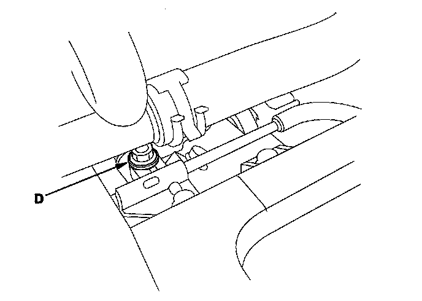
14. Start the engine, and shift into the M position.
15. Shift into 1st gear, and measure the 1st clutch pressure at the 1st clutch pressure inspection port (B) and 1st-hold clutch pressure at the 1st-hold clutch pressure inspection port (C) while holding the engine speed at 2,000 rpm.
16. Upshift to 2nd gear by pushing the shift lever, and measure the 2nd clutch pressure at the 2nd clutch pressure inspection port (D) while holding the engine speed at 2,000 rpm.
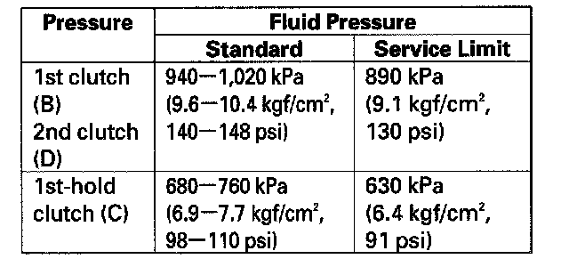
17. Turn the engine off, remove the air cleaner housing and intake air duct, then disconnect the oil pressure gauges from the 1st clutch pressure, 1st-hold clutch pressure, and 2nd clutch pressure inspection ports.
18. Install the sealing bolts in the 1st clutch pressure, 1st-clutch hold clutch pressure, and 2nd clutch pressure inspection ports with new sealing washers, and tighten the bolts to 18 N-m (1.8 kgf-m, 13 lbf-ft). Do not reuse the old sealing washers.
19. Install the air cleaner housing and intake air duct.
20. Connect the oil pressure gauge to the 3rd clutch pressure inspection port (E) and the 5th clutch pressure inspection port (G).
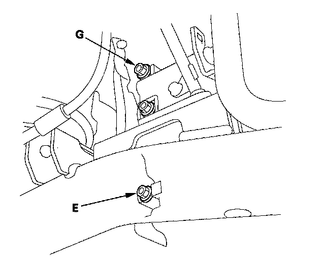
21. Connect the oil pressure gauge to the 4th clutch pressure inspection port (F).
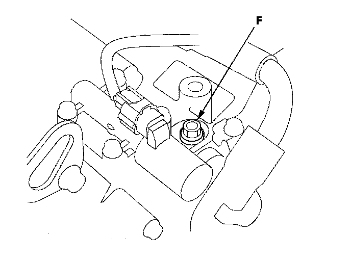
22. Cancel the transmission 2nd-hold control mode with the HDS; choose Pressure Assistance Mode in the Miscellaneous Test Menu of the A/T Mode Menu.
23. Start the engine, and shift to the D3 position.
24. Measure the 3rd clutch pressure at the 3rd clutch pressure inspection port (D) while holding the engine speed at 2,000 rpm.
25. Shift to the D position, and measure the 4th clutch pressure at the 4th clutch pressure inspection port (E) while holding the engine speed at 2,000 rpm.
26. Measure the 5th clutch pressure at the 5th clutch pressure inspection port (F) while holding the engine speed at 2,000 rpm.
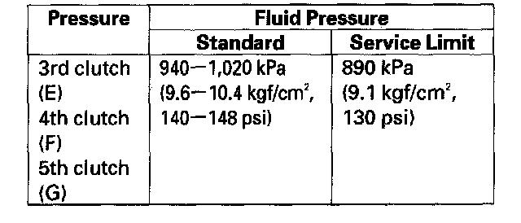
27. Bring the engine back to an idle, then apply the brake pedal to stop the wheels from rotating.
28. Shift to the R position, then release the brake pedal. Raise the engine speed to 2,000 rpm, and measure the 5th clutch pressure at the 5th clutch pressure inspection port (G).
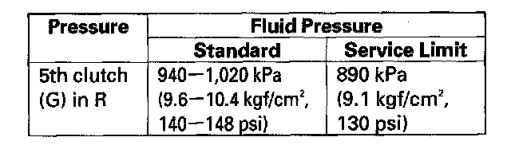
29. Turn the engine off, then disconnect the oil pressure gauges from the 3rd, 4th, and 5th clutch pressure inspection ports.
30. Install the sealing bolts in the 3rd, 4th, and 5th clutch pressure inspection ports with new sealing washers, and tighten the bolts to 18 N-m (1.8 kgf-m, 13 lbf-ft). Do not reuse the old sealing washers.
31. If the measurements are out of the service limit, the possible problems and probable causes are listed in the table.
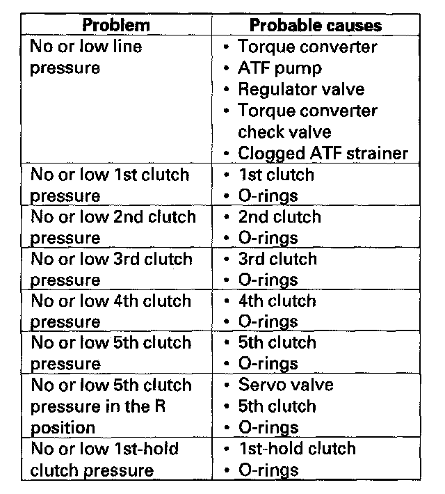
32. Install the damper on the front subframe.
33. Install the splash shield and transmission undercover.